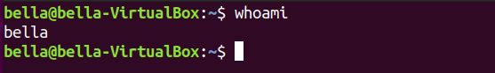
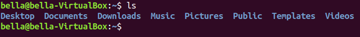
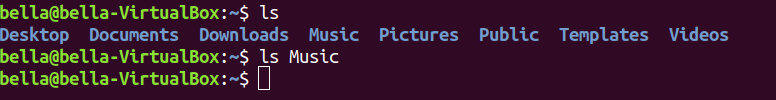
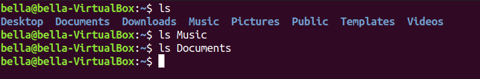
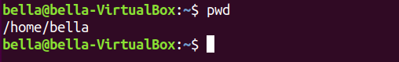

Bella Teaches the Linux Command Line. Copyright © 2019.
PDF version of Bella Teaches the Linux Command LineExamples are given with Ubuntu Linux. Other Linux distributions should be similar.
Start the Linux computer and it will proceed to the login screen.
Select the user name and enter the password.

The Linux desktop will display.


We will proceed to open a Linux terminal. On the upper left hand side of the screen select Activities.

A input box saying “Type To Search” box will appear.

Inside the “Type To Search” input box type the word Terminal.

The Linux terminal will appear. The terminal is also known as the Linux Shell or the command line.


Congratulations! You have logged into Linux and opened a terminal on the desktop! The Linux Terminal is a command language interpreter that executes commands read from your input. In the next chapter we will execute some commands.
whoamiThe command whoami prints your userid. At the Linux terminal type the command whoami.

Linux responds that Bella is logged in. Your system should respond that your logged in by displaying your login name.
lsThe command ls lists directory contents. Directories can also be called folders. At the Linux terminal type the command ls.

We see Bella has the following directories:
Desktop, Documents, Downloads, Music, Pictures, Public, Templates, Videos.
We can look inside an individual directory by giving command ls a specific
directory name to look in. Type: ls Music

Looks like Bella has no music.
We can check if Bella has any documents. Type: ls Documents

Bella has no documents
pwdThe command pwd is used to print the name of current working directory.

Bella’s current working directory is “/home/bella”. Therefore the “bella” directory is
inside the “home” directory.
mkdir and rmdirWhen using the command ls we can see that Bella has the following folders in
her “/home/bella” directory.
Desktop, Documents, Downloads, Music, Pictures, Public, Templates, Videos
Try typing the command ls and enter again.
cdAt the Linux terminal type the command cd.
echo and catAt the Linux terminal type the command echo.
cp and rmgeditmore and lessmandatecaltopclear| Jump to: | C D E G L M P R T W Z |
|---|
| Jump to: | C D E G L M P R T W Z |
|---|